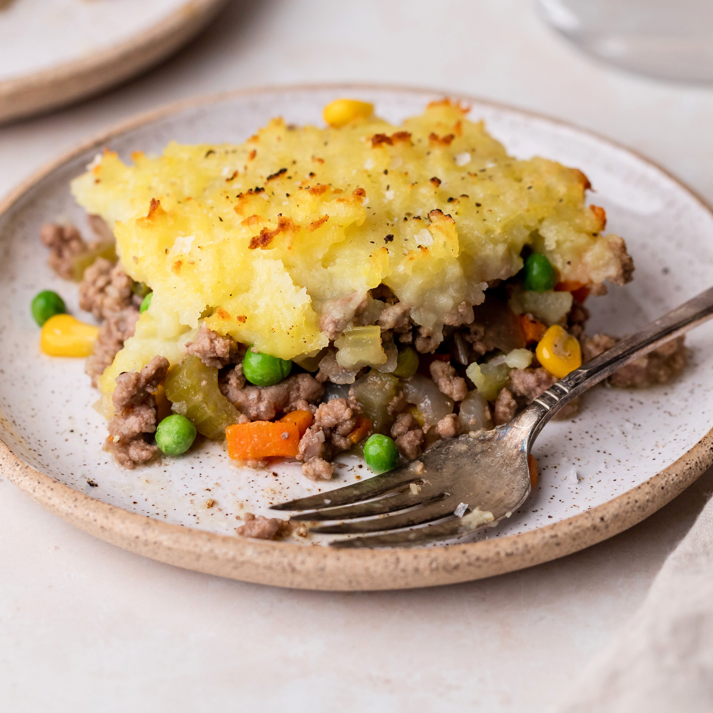

Shephard's Pie

How to Make Shephard's Pie
Ingredients
- Ground beef
- Onion
- Garlic
- Bag of frozen mixed vegetables
- Potatoes
- Tomato Paste
- Milk
- Butter
- Italian herbs
- Beef broth
- Cheese
- Flour
Steps
- Preheat oven to 400 degrees F.
- Saute some chopped onions in olive oil.
- Add ground beef to the skillet. Stir and cook until browned.
- Add italian herbs along with minced garlic and Worcestershire sauce.
- Cook for a minute. Add flour and tomato paste.
- Add beef broth and frozen veggies. Simmer until meat gravy is thick.
- Boil some chopped potatoes until they are soft. Drain when done.
- Add butter, milk and cheese to the potatoes and mash until smooth.
- Pour the meat mixture in the casserole dish. Top with mashed potatoes.
- Bake until potatoes are golden and the meat is bubbling.